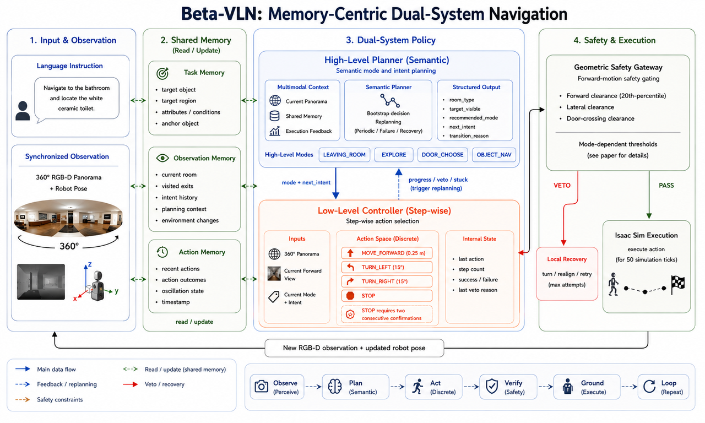
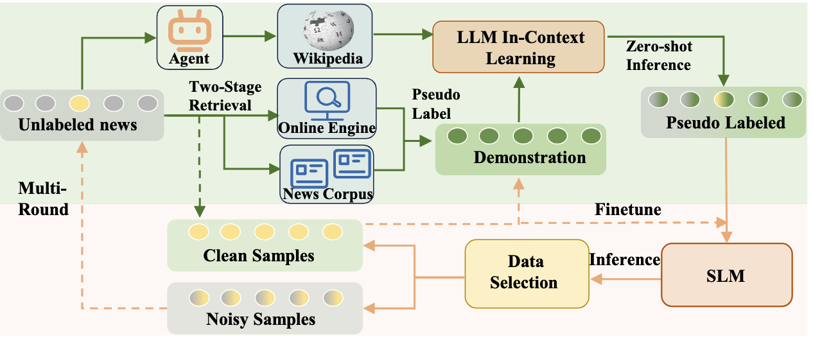

Ranked 3rd out of 117 teams in the VLNverse ECCV 2026 EMR Challenge.在 VLNverse ECCV 2026 EMR Challenge 的 117 支队伍中排名第 3。
About (Shenghan Tan)关于 （谭圣涵）
M.S. @ BUAA · Embodied Intelligence · VLN北航硕士生 · 具身智能 · VLN
Hi, I’m Shenghan Tan, a master’s student at the School of Cyber Science and Technology, Beihang University.
I received my bachelor’s degree from Beihang University in 2025 and continued here for my graduate study.
My research path has moved from AI safety and recommender systems toward embodied intelligence, with a current focus on Vision-and-Language Navigation (VLN), multimodal reasoning and reliable decision-making in interactive environments.
I’m open to research discussions and collaborations in embodied intelligence and VLN.
你好，我是谭圣涵，现为北京航空航天大学网络空间安全学院硕士研究生。
我于 2025 年在北航完成本科阶段学习，并继续在北航攻读硕士学位。
我的研究经历从 AI Safety 与推荐系统逐步转向具身智能，目前主要关注视觉语言导航（VLN）、多模态推理以及交互环境中的可靠决策。
欢迎就具身智能与 VLN 方向的研究和合作与我交流。
BEIJING
Drag to rotate拖拽旋转
News动态
Recent updates近期进展
Our paper “Collaborative Evolution: Multi-Round Learning Between Large and Small Language Models for Emergent Fake News Detection” was published at AAAI 2025.论文《Collaborative Evolution: Multi-Round Learning Between Large and Small Language Models for Emergent Fake News Detection》发表于 AAAI 2025。
Education教育经历
Beihang University北京航空航天大学
Master’s Student硕士研究生
School of Cyber Science and Technology, Beihang University北京航空航天大学网络空间安全学院
Undergraduate本科生
School of Cyber Science and Technology, Beihang University北京航空航天大学网络空间安全学院
Internship Experience实习经历
Industry & research产业与研究
Projects项目经历
Embodied AI & LLM reasoning具身智能与大模型推理
VLNverse ECCV 2026 EMR Challenge
Beta-VLN
Memory-Centric Dual-System Navigation以记忆为核心的双系统导航
Beta-VLN separates semantic planning from safe step-wise execution: a high-level “big brain” understands rooms and plans subgoals, while a low-level “small brain” executes actions. Shared memory coordinates both systems across time.
Beta-VLN 将语义规划与安全的逐步执行解耦：“大脑”理解房间并规划子目标，“小脑”负责动作执行，共享记忆则在时间维度上协调两个系统。
- Task Memory任务记忆
- Preserves targets, attributes, regions, and spatial relations.保存目标、属性、区域与空间关系。
- Observation Memory观测记忆
- Tracks rooms, routes, exits, rejected doors, and search coverage.维护房间、路径、出口、被否决门口与搜索覆盖。
- Visual Decision Memory视觉决策记忆
- Detects repeated views, insufficient progress, and redundant decisions.识别重复视点、进展不足与冗余决策。
- Action & Recovery动作与恢复记忆
- Records actions, stalls, and deadlocks for recovery and replanning.记录动作、停滞与死锁，支持恢复和重规划。

Ant Group · Auditable Reasoning for LLM Agents蚂蚁集团 · 面向 LLM Agent 的推理链完整性核验与可审计推理
Will lead the development of a framework for verifying the integrity, evidential grounding, and cross-step consistency of visible LLM Agent reasoning.将主导面向 LLM Agent 可见推理过程的完整性、证据支撑与跨步骤一致性核验研究。
Research Objective研究目标
From Plausible Answers to Traceable Reasoning从“答案合理”走向“推理可回溯”
The project reconstructs auditable reasoning objects from complete Agent sessions—including actions, claims, evidence, decisions, entities, and relations—and aligns them with the visible think / reasoning chain. The goal is to identify missing steps, unsupported premises, premise drift, broken evidence chains, and unresolved uncertainty while preserving links to the original session.
项目将从完整 Agent Session 中重建行为、断言、证据、决策、实体与关系等可审计对象，并与可见的 think / reasoning 推理链对齐，在保留原始 Session 回指关系的同时，识别步骤跳跃、关键前提未验证、前提漂移、证据链断裂与未标注的不确定性。
-
01
Parse解析Build actions, claims, evidence, decisions, entities, relations, and a Session Tree.构建行为、断言、证据、决策、实体、关系与 Session Tree。
-
02
Align对齐Map reasoning steps and premises back to traceable session objects.将推理步骤与前提映射到可回指的 Session 对象。
-
03
Verify核验Detect reasoning gaps and cross-step premise or state conflicts.检测推理缺口以及跨步骤前提与状态冲突。
-
04
Audit审计Generate structured reports with evidence references and repair guidance.生成带证据回指与修复建议的结构化审计报告。
- Gap Taxonomy缺口分类
- Step jumps, hidden assumptions, premise drift, overgeneralization, broken evidence chains, and boundary omissions.覆盖步骤跳跃、隐性假设、前提漂移、过度归纳、证据链断裂与边界条件缺失等问题。
- Domain Templates领域模板
- Extensible reasoning templates for finance, healthcare, and security tasks.构建面向金融、医疗与安全任务的可扩展推理模板。
- Core Deliverables核心产物
- A reasoning verifier, cross-step consistency prototype, template library, annotated cases, and audit-report generator.形成推理链核验器、跨步骤一致性原型、模板库、标注案例与审计报告生成器。
Publications代表性论文
1 publication1 篇论文

AAAI 2025
Collaborative Evolution: Multi-Round Learning Between Large and Small Language Models for Emergent Fake News Detection
A multi-round collaboration framework combining the generalization ability of LLMs with the specialized functionality of SLMs for emerging news events.提出多轮协同检测框架，结合大模型的泛化能力与小模型的专业能力，应对突发新闻事件检测。
Research Journey研究方向
Past → Present过去 → 现在
AI Safety人工智能安全
Reliable and trustworthy learning systems.可靠、可信的人工智能系统。
Recommender Systems推荐系统
Search, recommendation and user-facing intelligence.搜索、推荐与面向用户的智能系统。
Embodied Intelligence & VLN具身智能与 VLN
Multimodal reasoning, spatial understanding and navigation.多模态推理、空间理解与视觉语言导航。